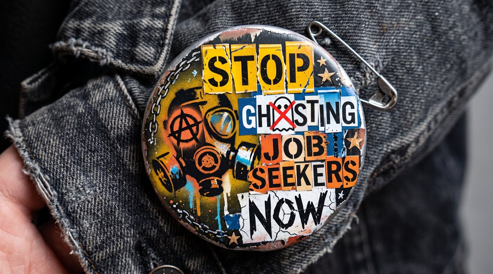

Worn, not just written. #StopGhostingJobSeekers
I have ghosted candidates. I am going to be honest about that from the start, because this piece does not work unless I am. I told myself I did not have time. I told myself the candidate was not right and the conversation would be awkward. And if I am being completely direct, sometimes I just did not want to have a difficult call. I also leaned on something a lot of recruiters lean on: everybody else does it. The industry had normalised it. It was just how things worked. I believed that until I started looking at what that silence actually does to people. And then I could not unknow it.
This is not a few bad experiences.
This is a pattern.
The numbers on recruiter and employer ghosting have been rising steadily for three years. They are now at a level that is difficult to describe as anything other than a crisis of basic professional respect.

That last number is worth sitting with. 47 hours. More than a full working week. (This is an estimated figure derived by The Interview Guys 2025 Ghosting Index from average application time data.) Spent crafting applications, preparing for calls, attending interviews, doing your research and then receiving nothing. No outcome. No acknowledgement that the time was spent at all.
According to iHire’s 2026 candidate experience survey, 53 percent of job seekers were ghosted within the past year. That is up from 48 percent in 2025 and 38 percent in 2024. Three years of consecutive increases during which most of the industry has continued to describe ghosting as regrettable while doing very little to stop it.
Silence is not neutral.
It sends a message.
When a recruiter stops replying, the candidate does not think “they must be busy.” That is what recruiters tell themselves. What candidates actually experience is something quite different.

“When weeks turn to months and you still have not heard back, you question whether you are competent at all.”
Tribepad research · reported in Yahoo FinanceThat is not a minor inconvenience. That is a person re-evaluating their professional worth based on a recruiter’s decision not to pick up the phone.
The Tribepad study of 2,000 job seekers found that 86 percent of those ghosted said the experience had left them feeling down or depressed in some way. Not frustrated. Not annoyed. Down or depressed. Those are not words that describe a bad customer service experience. They describe a psychological event.
The wider picture supports this. Research shows that 72 percent of US job seekers say the job search process negatively impacts their mental health. Job hunting already sits in the top tier of life’s most stressful experiences. Ghosting does not sit alongside that stress. It amplifies it.
Nearly half of all job seekers are carrying the expectation that a recruiter will disappear on them. They are starting a process braced for abandonment. That is the baseline the industry has created.
Why silence hits harder
than a rejection does.
A rejection is a closed door. That is painful, but it is something a person can process. There is an answer. There is a reason to move on.
Silence is something different. It provides no information and no closure. The person being ghosted has to construct their own explanation for what happened and the explanations people reach for are rarely kind to themselves.
Was my CV not good enough? Did I say something wrong in the interview? Was it my age? Did they look at my LinkedIn? Am I applying for the wrong level of role?
These are not abstract worries. The iHire research found that age discrimination ranked fourth among the biggest mental health challenges facing job seekers, sitting directly behind waiting to hear back from employers, receiving rejections and finding the right roles. Older job seekers in particular described ghosting as something that reinforced existing anxieties about being passed over without explanation.

When communication stops without explanation, people fill the silence with the most available explanation. In a job search context, that explanation is almost always a negative one about the person’s own worth or suitability. There is no competing information to balance it against.
A rejection with a reason, however brief, does not produce the same effect. It closes the loop. Ghosting leaves the loop open indefinitely.
Research into ghosting behaviour has consistently found that people who have been ghosted show a higher likelihood of ghosting others in return. Studies published in Deviant Behavior and the Journal of Social and Personal Relationships both found this reciprocal pattern. The behaviour becomes a cycle. The normalisation that recruiters relied on to justify it is, in part, the industry’s own creation.
In-house or agency. The silence looks
exactly the same to the person waiting.
There is a version of this conversation that lets one side of the industry off the hook. Agency recruiters ghost. In-house talent teams ghost. Hiring managers ghost. The behaviour is not exclusive to any one type of recruiter. It runs across the whole system and it is worth being specific about where and how.
We live in an era of LinkedIn personal branding where recruiters of every kind post about candidate experience, about treating people like humans, about what good looks like. The posts get likes. The behaviour does not always follow. That gap between what people say in public and what they do in a hiring process is one of the most consistent findings across candidate experience research. It is also one of the most damaging, because candidates can see it too.
Ghosting is not a personal failing any one recruiter has. It is a structural habit that the whole industry, including internal talent teams with employer brand budgets and posted values about inclusion and respect, has allowed to become normal. The brand on the website and the experience of applying do not always match. When they do not, candidates notice. And they tell people.
Agency recruiters
Agency recruiters typically manage high volumes of candidates across multiple clients at speed. The commercial pressure is real. When a role is cancelled, when a client goes cold, when a preferred candidate is chosen in a direction you did not see coming, the easiest thing to do is move on to the next live brief. The candidate waiting for an update on the one that just disappeared from your desk does not make it into the next action. That is how it happens. It is not malicious. But it is a choice.
In-house talent teams
In-house recruiters face a different version of the same problem. They are reliant on hiring managers for decisions, feedback and timelines and hiring managers are frequently the ones who go dark first. The recruiter sitting between the candidate and the business has no update to give because they have not received one themselves. Rather than telling the candidate that, they say nothing. The candidate gets ghosted by proxy. The recruiter did not make the decision that caused the silence, but they are the face of it.
Hiring managers
Research from iHire found that 50 percent of candidates were ghosted by a company or hiring manager directly, not through a recruiter at all. People who applied for a role, reached an interview and then received nothing from the person they actually spoke to. That is a management behaviour problem, not a recruitment problem. But nobody is separating it out. The candidate just knows they were ignored.
That last statistic matters more than it might appear. 72 percent of people who have a poor candidate experience share it publicly. Every ghosted candidate is a potential Glassdoor review, a LinkedIn post, a conversation in an industry community. The silence does not stay private. It travels and it shapes what the next wave of candidates thinks before they even apply.
“Due to the high volume of applications we will not be able to respond to unsuccessful candidates.”
Let us talk about this sentence. Because it has become the industry’s get-out-of-jail card. It appears at the bottom of job adverts, in automated email responses and occasionally in the first message a candidate receives after applying. And it is, to be blunt, a cop out.
“Due to the high volume of applications we receive, we are only able to contact candidates who have been successful at this stage. If you have not heard from us within 14 days, please consider your application unsuccessful.”
Read that again. The company has decided in advance that they will not have time to tell you no. They have built the non-response into the process as an official policy. They have automated the absence of basic courtesy and then printed it at the bottom of the advert so it looks considered.
What it actually says, stripped of the professional language, is this: we cannot be bothered to tell you.
There are genuine operational pressures behind this. A role receiving 280 applications, which is the current UK average according to ModernCV’s UK Job Interview Statistics 2026, does create real volume challenges. Nobody is pretending otherwise. But the answer to that challenge is not to tell people in advance that they should not expect to hear from you. The answer is to build a process that can handle the volume without discarding the humans inside it.
ATS systems can send rejection emails. They can be personalised at a basic level. They can go out within seconds of a decision being logged. The technology to do this has existed for years. The choice not to use it is not a capacity issue. It is a priority issue. And when a company chooses not to prioritise it, the message to every unsuccessful candidate is the same: you were not worth two minutes of our time.
The psychological effect of this specific message is worth noting separately. A candidate who receives it does not feel screened. They feel processed. They have been run through a system that did not see them as a person and been notified of that fact in advance. That is qualitatively different from simply not hearing back. It is the organisation telling you, in writing, that you were always going to be a number.
Research from the Greenhouse 2025 State of Job Hunting Report found that 79 percent of active job seekers are experiencing heightened anxiety about the current market. The due-to-high-volume message is not a comfort to those people. It is a confirmation of their worst fear: that they are invisible.
Being ghosted after a recruiter
puts you forward.
There is a second kind of ghosting that gets less attention and, in some ways, does more damage. It is the silence that follows after a recruiter has submitted you for a role.
At this point the candidate has already been through something. They have spoken to the recruiter. They have been told they are a good fit. They have been told their details are going across. They have invested not just time but something harder to replace: hope. They have allowed themselves to imagine that this one might be the one.
And then nothing. The recruiter goes quiet. No update on whether the client reviewed the CV. No feedback. No timeline. No acknowledgement that the submission happened at all.

When a recruiter submits you for a role and then disappears, you are not just left wondering about the job. You are left wondering whether the recruiter was ever really in your corner at all.
The Greenhouse 2024 State of Job Hunting Report (published December 2024) found that 66 percent of historically underrepresented job seekers experienced post-interview ghosting, compared to 59 percent for white candidates - a seven-point gap that holds across all three countries surveyed (US, UK and Germany). The silence is not falling equally.
Where in the process are
people being abandoned?
This is the job application journey from start to finish. At every stage, a recruiter or hiring team can choose to communicate or go silent. The colour shows how likely ghosting is at each point, based on the data. The stages shaded amber and orange are where it happens most.
Source: iHire 2026 candidate experience survey · The Interview Guys 2025 Ghosting Index
Why it happens.
Said plainly.
The industry has a standard set of explanations for ghosting and some of them are true. Recruiter workloads increased by 26 percent in the final quarter of 2024 as AI-generated applications flooded hiring pipelines. Roles disappear mid-process. Hiring managers go silent. Priorities shift.
These things are real. They do not explain the full picture.
Lack of time.
This one is at least partly true. Recruiters carry large desk loads and the administrative reality of contacting every candidate at every stage is a genuine problem. But time is also a reason we reach for because it sounds better than the alternatives. Most of the time, sending a brief message takes under two minutes.
The candidate was not right and the conversation felt hard.
This is the one that needs the most honesty. Telling someone they have not been shortlisted, or that the client passed, or that feedback is not available, is uncomfortable. Silence is easier in the short term. It avoids confrontation. It avoids the moment where you have to say something a person does not want to hear. The problem is that the discomfort we are avoiding by staying silent is the same discomfort we are handing entirely to the candidate, with none of the information they would need to process it.
It has been normalised.
This is the one that kept many of us doing it longest. When everyone around you is doing something, it stops feeling like a choice and starts feeling like the way things work. The industry created a culture where silence became an accepted answer. That does not make it acceptable. It makes it a collective problem that requires a collective decision to change.
Research from the Stepstone Group found that candidates who have been ghosted themselves show a higher likelihood of ghosting recruiters in return. When 76 percent of employers report being ghosted by candidates, they are partly experiencing the culture they helped to build. The behaviour travels in both directions.

I have been ghosted by recruiters too. Both internal talent teams and agency recruiters. I know what it feels like to put time and energy into a process, to speak to a human being who seemed genuinely interested and then hear nothing. Not knowing whether I was not good enough, not the right age, not the right fit for reasons nobody would say to my face. The frustration was real. The feeling of being dismissed without explanation was real. The question of whether my age had something to do with it was one I could not answer which meant I could not put it down.
I think about that feeling when I think about the candidates I went quiet on. The phone call I did not make. The message I did not send. I knew the result and they did not. That imbalance was something I had the power to correct and I did not always use it.
If you have been ghosted, the problem is not you. The industry normalised a behaviour that has real consequences for real people and then kept calling it a resource issue. It is not just a resource issue. It is a choice. And it is one that can be made differently. By agency recruiters. By internal talent teams. By hiring managers. By all of us.
Job Seekers.
If this article landed with you, share it. Send it to a recruiter you know. Post it in a team meeting. Put the hashtag on your next LinkedIn post. The only way this changes is if enough people in the industry decide it should.
“I am committed to stop the ghosting of applicants when recruiting.”
Copy this statement and use it on LinkedIn, in your email signature, in your job adverts or anywhere candidates can see it. Pair it with the hashtag #StopGhostingJobSeekers
One brief message.
That is the actual ask.
The fix for ghosting is not complicated. It does not require a system overhaul or a new piece of technology or a two-day training programme.
It requires a decision to send a message.
The message does not need to be long. It does not need to include detailed feedback that the client has not provided. It needs to tell the person that there is an update, that the process has moved on without them and that their time is acknowledged.
That is it. Two sentences. Under a minute to write. And for the person on the other end, it is the difference between closure and an open question they will carry for weeks.
The candidates reading this who have been ghosted deserve that. The ones who prepared, who took the time, who trusted a recruiter to handle part of their working life professionally. They do not deserve silence. Nobody does.
The behaviour got normalised. That does not mean it has to stay that way. Normalisation is a decision made incrementally by individuals. It can be unmade the same way.
If you have been ghosted, it is not a reflection of your worth. It is a reflection of a habit the industry built and has not yet had the honesty to fully confront. This is that confrontation.
The Dispatch · The Ghosting IssueSources
- Ghosting prevalence (UK): Tribepad #EndGhosting Report (2021/22), survey of 2,000 UK job seekers. Reported via Yahoo Finance / AOL News. Note: Tribepad’s 2025 follow-up found the figure had fallen to 42% on their platform, though Greenhouse, iHire and Criteria Corp data show ghosting rising again across the broader market.
- Post-interview ghosting (US, 2025): The Interview Guys · The 2025 Ghosting Index. Published September 2025.
- Ghosting rates by stage (2026): iHire · 2026 Candidate Experience Survey. 1,024 candidates surveyed October 2025. Instant Interview, March 2026.
- Mental health impact (depression / low mood): Tribepad report. 86% figure. Reported in Yahoo Finance / AOL.
- Job search mental health (72%): Workplace Mental Health Method research. Melissadoman.com, November 2025.
- Ghosting as top frustration (59%): iHire · 2025 State of Online Recruiting Report. Surveyed 1,421 job seekers and 529 employers.
- Underrepresented candidates (66%): Greenhouse · 2024 State of Job Hunting Report (published December 2024). Survey of 2,500 workers across US, UK and Germany.
- Candidates sharing bad experiences online (72%): Acara Solutions, citing industry research. acarasolutions.com.
- Heightened anxiety (79%): Greenhouse · 2024 State of Job Hunting Report (published December 2024).
- Ghosted candidates more likely to ghost in return: Stepstone Group research. Reported via Papershift, July 2025.
- Candidate ghosting cycle / reciprocal behaviour: Cobzeanu & Mairean (2025), Deviant Behavior (Romania, n=578 young adults); BPS Research Digest citing Journal of Social and Personal Relationships study, May 2025. Stepstone Group research on employer ghosting cycle, via Papershift July 2025.
- Age discrimination ranked 4th in job search mental health challenges: iHire · February 2024 survey. 2,129 US job seekers.
- Recruiter workload increase (26%): Greenhouse internal data, Q4 2024. Reported in Greenhouse 2024 State of Job Hunting Report and via The Interview Guys.